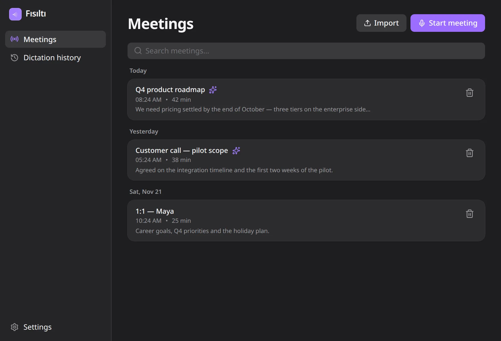
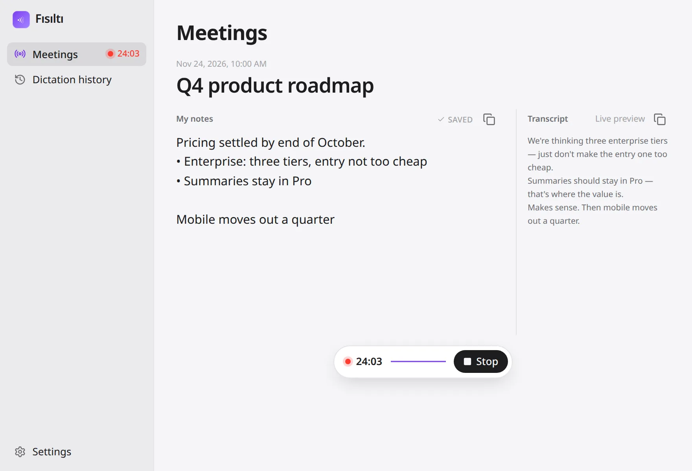

Push-to-talk dictation and meeting notes that are transcribed on your own machine. No account, no telemetry, nothing uploaded unless you ask for it.
This is the app's core loop rebuilt for the web: hold the button, talk, let go. The audio is trimmed by a voice-activity gate, resampled to 16 kHz and transcribed by OpenAI's Whisper compiled to WebAssembly. The model downloads once; after that your voice never leaves the page — open the network tab and check.
Demo model: whisper-base, multilingual, int8 — about 73 MB, downloaded once and cached by your browser. It is 20× smaller than what the app uses, so expect rough edges, especially in Turkish. The desktop app runs Whisper Large v3 / Turbo natively on Metal or Vulkan, with Silero VAD instead of this energy gate.
Every stage runs locally by default. The numbers fill in from your own demo run above.
Mic through cpal; in meetings, system audio too — CoreAudio tap, PipeWire monitor or WASAPI loopback.
Silero VAD (ONNX) keeps the speech and drops the dead air before any model sees it.
Down to 16 kHz mono with rubato — the rate every speech model expects.
whisper.cpp on Metal (Mac) or Vulkan (Windows, Linux). One engine resident at a time.
Typed into the focused app — editor, browser, chat, terminal — and kept in local history.
When Teams, Zoom, Meet or any browser call starts using the microphone, Fısıltı offers to take notes. It records your mic and the system audio as two sources, cuts them at natural pauses, and transcribes while the meeting is still going — so stopping takes seconds, not a second pass over an hour of audio.
Microsoft Teams is using the microphone. Take notes?
CoreAudio process objects: every process pulling mic input, matched by bundle id. Fısıltı's own PID is excluded.
// macOS 14+, via cidre for p in process_object_list()? { if p.is_running_input()? && is_meeting_app(&p.bundle_id()?) { return Some("us.zoom.xos"); } }
A CoreAudio process tap on system output, beside the mic stream. Subtitles live in a non-activating panel hidden from screen sharing.
The microphone privacy consent store. An entry whose
LastUsedTimeStop is zero is recording right now.
// HKCU\…\CapabilityAccessManager\ConsentStore\microphone let live = start != 0 && stop == 0; // NonPackaged#C:#…#ms-teams.exe → "ms-teams" keyed_match(WINDOWS_MEETING_APPS, &[exe_stem, package])
WASAPI loopback on the default output, re-opened when you
switch headsets, padded with silence while nothing plays.
Subtitles use WDA_EXCLUDEFROMCAPTURE.
PulseAudio / PipeWire recording streams, matched by application name and binary.
// source-outputs that are not corked for s in pulse.recording_streams()? { linux_meeting_app_match(&[s.app_name, s.binary]) }
The default sink's monitor source. Meeting names come from KWin window captions on KDE; subtitles are a layer-shell strip on Wayland.
VAD-cut segments of up to 30 s are transcribed as you talk. If the GPU falls behind they queue in a backlog instead of being dropped.
Long silence, or the meeting app letting go of the mic, prompts an end — and stops on its own after a grace period.
Audio is buffered to disk per source. Quit mid-meeting and the session is recoverable on next launch.
Titled from the calendar event in progress or the meeting window's title — not "Meeting 14".
Drop a phone voice memo — m4a, mp3, wav, flac, ogg — and it becomes a meeting with transcript, title and summary.
Every finished meeting written to a folder you choose, with YAML front matter. Obsidian-ready.


Some things a local model can't do yet: tell four remote voices apart, or translate a conversation while it is still happening. Fısıltı can hand those jobs to Google's Gemini — off by default, with your own API key, and with the running cost on every meeting.
A Rust core with a React face, held together by Tauri 2. Native audio on every platform, no Electron, no Chromium bundled.
whisper.cpp with Metal on Apple Silicon and Vulkan on Windows and Linux. ONNX Runtime (DirectML on Windows) for Silero VAD and ONNX speech models.
cpal for microphones everywhere; system audio from a CoreAudio process tap, a PipeWire sink monitor or WASAPI loopback. Speaker vs headphone routing is detected so echo from the speakers isn't transcribed twice.
Signed and notarized on macOS, minisign-verified auto-updates on macOS and Windows, a single rustls TLS stack, and a release pipeline that builds macOS and Windows in parallel and writes one update manifest for both.
A whisper is a sound that stays in the room.
By default, so is everything Fısıltı hears: the models run here, the history lives here, and the only network calls are the ones you configure yourself. Cloud transcription is offered, switched off, with your own key and a running cost shown on every meeting. The choice is yours to make, not ours to make quietly.
Signed and notarized DMG. Drag to Applications; updates arrive inside the app.
Download .dmgNSIS installer with auto-updates. Not code-signed yet, so SmartScreen asks once: More info → Run anyway.
Download installerRuns on PipeWire/PulseAudio with Vulkan. No packaged release yet — four commands below.
Build guide$ git clone https://github.com/umitaltintas/fisilti && cd fisilti $ bun install $ bun run tauri build # Rust + Bun; Vulkan SDK on Windows/Linux $ ls src-tauri/target/release/bundle # your installer is in here